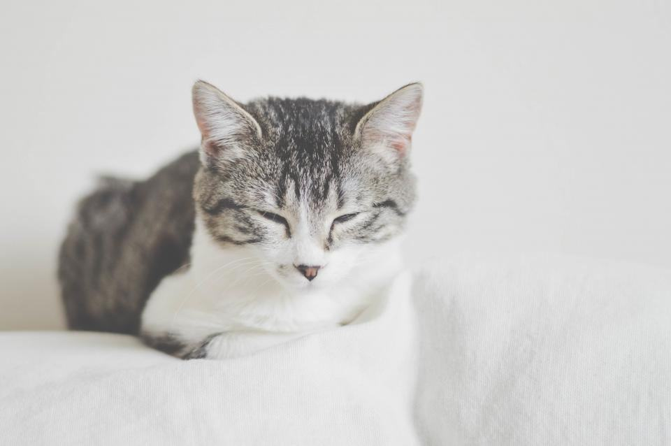

Om Saxskolan
Saxskolan startades 2015 av hundfrisörmästaren Agneta Rydén, som hade drivit salong i Skövde i tjugo år och tröttnat på att inte hitta utbildad personal. Hon byggde om en före detta tryckerihall på Hasslum till skola med åtta trimbord, fyra badkar och ett klassrum för pälsteori och anatomi.
En hundfrisörskola där din hund klipps av elever under handledning – till lägre pris, med längre tid och med en lärare vid varje bord.
Saxskolan startades 2015 av hundfrisörmästaren Agneta Rydén, som hade drivit salong i Skövde i tjugo år och tröttnat på att inte hitta utbildad personal. Hon byggde om en före detta tryckerihall på Hasslum till skola med åtta trimbord, fyra badkar och ett klassrum för pälsteori och anatomi.
Utbildningen är 40 veckor på heltid och tar emot tolv elever per år. Hälften av tiden klipper eleverna kundhundar i elevsalongen, under handledning av två lärare. Sedan starten har 104 elever gått ut, och de flesta arbetar i dag på salonger mellan Göteborg och Jönköping.
Fyrtio veckor från nybörjare till gesäll
Saxskolan startades 2015 av hundfrisörmästaren Agneta Rydén, som hade drivit salong i Skövde i tjugo år och tröttnat på att inte hitta utbildad personal. Hon byggde om en före detta tryckerihall på Hasslum till skola med åtta trimbord, fyra badkar och ett klassrum för pälsteori och anatomi.
Boka tid i elevsalongen
Skriv ras, storlek och om hunden har varit rädd hos frisör förut, så föreslår Klara elev- eller lärartid.
- Telefon
- 070-174 06 60
- E-post
- info@saxskolan.se
- Öppettider
- Elevsalong tis–tors 8.30–16 under terminerna
Boka och hitta hit
- Skolan
- Hasslumsvägen 22
541 38 Skövde - Telefon
- 070-174 06 60
- E-post
- info@saxskolan.se
- Öppettider
- Elevsalong tis–tors 8.30–16 under terminerna